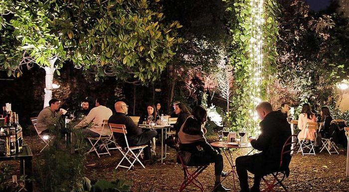
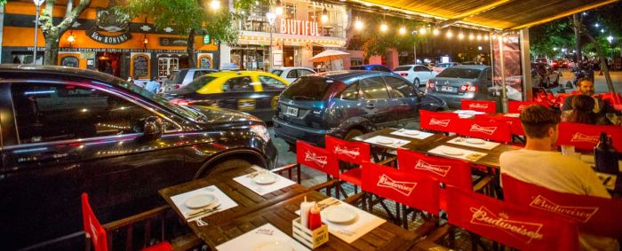
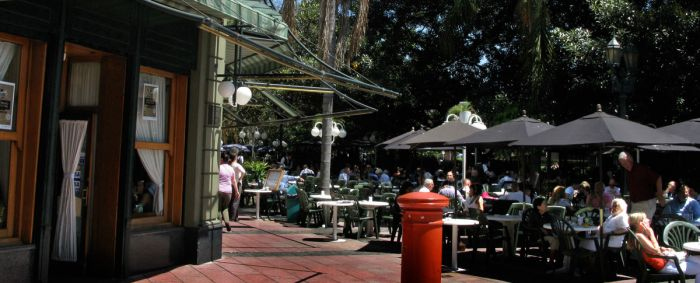
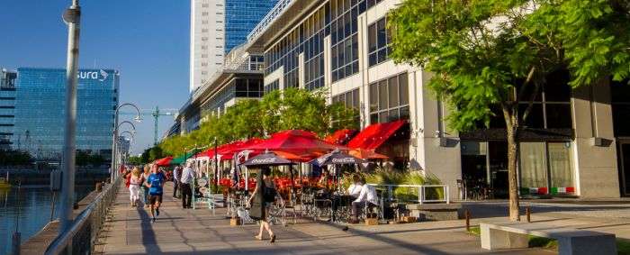
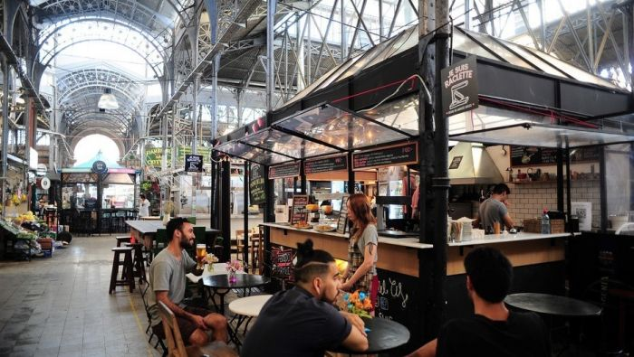

La propuesta gastronómica de Buenos Aires no deja de sorprender. Cada vez son más los barrios que se suman a lista de polos gastronómicos de la ciudad: estos son los más conocidos, donde se encuentran las mejores opciones. La propuesta gastronómica de Buenos Aires desde siempre estuvo colmada de opciones impecables, con una cocina de lujo y para todos los gustos y precios. El amor por la cocina, lo gourmet y la coctelería parece estar en constante crecimiento, y cada vez son más los barrios porteños que se suman a la lista de distritos foodie y agregan nuevos nombres al catálogo de restaurantes y bares de Argentina. En está línea, los barrios que cada vez se hacen más conocidos por su propuesta de opciones para la hora de salir a comer son conocidos como polos gastronómicos, donde hay una oferta para cada gusto y para cada humor. Estas son las zonas gastronómicas más concurridas y conocidas de CABA, con algunas sorpresas nuevas, y las mejores propuestas en cada zona, según The Fork y ranking de los clientes.
Descubre la rica gastronomía porteña
-

Palermo
El más viejo del libro: el barrio de Palermo tiene una oferta infinita de bares y restaurantes de primera clase...
Algunos de los mejores de Palermo:
- Cabernet
- Niño Gordo
- El Preferido
- Cucina Paradiso
- La Mar
-

Las Cañitas
Ubicado entre los barrios de Palermo y Belgrano, el barrio de Las Cañitas desde siempre es conocido por su excelente propuesta gastronómica...
Alguno de los mejores de Las Cañitas:
- Sabino
- La Colorada
- Novecento
- Kansas
- Campo Bravo
-

Recoleta
Una porción de París en Buenos Aires: el barrio de Recoleta no sólo ofrece una arquitectura al mejor estilo francés...
Algunos de los mejores de Recoleta:
- Alvear Grill
- La Parolaccia
- Paru
- Dandy
- The Food Truck Store
-

Puerto Madero
Podría llamarse el barrio más lujoso de Buenos Aires: Puerto Madero. Los antiguos docks del puerto de Buenos Aires, creado en 1900...
Algunos de los mejores de Puerto Madero:
- Trade Skybar
- Faena
- Chila
- Happening
- Osaka
-

San Telmo
El más clásico de los barrios porteños, y puede que el más antiguo, con aires tangueros y cultura bonaerense en cada esquina...
Algunos de los mejores de San Telmo:
- Hierbabuena
- Brasserie Petanque
- Avelino
- Amici Miei
- Casal de Catalunya